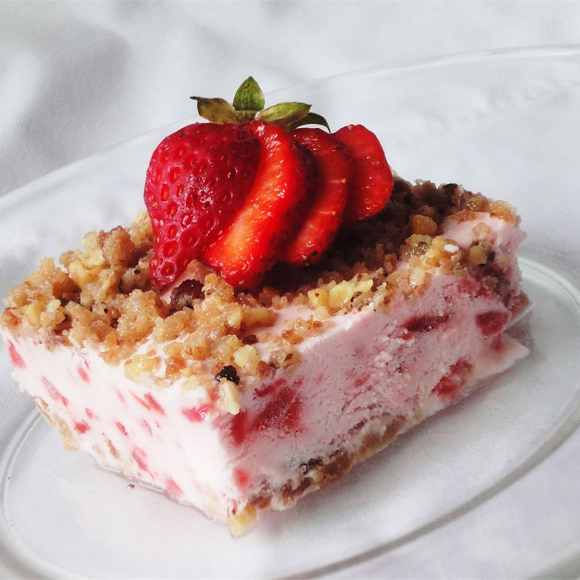

Frosty Strawberry Squares

Description:
A frozen strawberry treat you can't put down, but is a little messy to make.
Ingredients:
- Walnuts
- Heavy cream
- Brown sugar
- Egg whites
- Butter
- Flour
- Strawberries
- Lemon Juice
- White sugar
Instructions:
- Preheat the oven to 350 degrees F (175 degrees C). Grease a 9x13 inch baking dish.
- Line a rimmed baking sheet with aluminum foil. In a bowl, stir together the flour, brown sugar, walnuts and melted butter.
- Toast in the oven until walnuts are fragrant, about 15 minutes; stir occasionally. Sprinkle 2/3 of the walnut mixture evenly over the bottom of the 9x13 inch dish.
- In a large bowl, whip the egg whites with the lemon juice until they can hold a soft peak.
- Bake in preheated oven for 1 hour. Turn the oven off; let cheesecake cool in the oven with the door closed for 5 to 6 hours to prevent cracking.
- In a separate bowl, whip the cream with an electric mixer until stiff but not grainy. Fold into the strawberry mixture. Spoon over the crust in the dish and spread evenly.
- Top with the remaining walnut mixture. Freeze for 6 hours, or overnight.